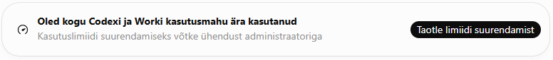
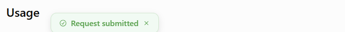

Worki limiidinupp avas taotluse asemel uue samasuguse kaardi
„Request Increase” / „Taotle limiidi suurendamist” avas põhjenduse vormi asemel uue Worki kaardi sama piirangubänneriga. Kasutaja näitas kahte kaarti. Sama käitumist kontrolliti Chrome’is ja Opera privaataknas.
Toiminud alternatiivne tee
- Ava ChatGPT Settings → Usage.
- Vali Request limit increase ja täida taotluse põhjendus.
- Esita taotlus. 29. oktoobri kell 01.36 kuvatõmmisel oli teade Request submitted ning lehel Your request is pending admin review.
See on bänneri vigasest nupust mööduv töövõte. Esitamise kinnitus ei tähenda, et administraator on suurema limiidi juba andnud. Diagnostikas leiti seadistuste vaatele viitav toiming request_increase_usage_settings ja request_url: null; nende põhjal ei saa üksi määrata vale ümbersuunamise algpõhjust.


Seis: taotlus esitatud, nupu viga lahendamata. Taotlemise alternatiiv töötas; bänneri parandust ei kinnitatud.